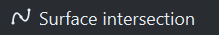

ZIMA-CAD / Guides
Find your next step.
Visual guides to individual tools. The same guides on the web and inside ZIMA-CAD.
Guides: 156
Getting started guides


Shared commands
Create CAMCreates a CAM setup for machining stock into a target shape.Open guideCreate RenderCreates a Render Body sharing one scene across calculated Part Bodies.Open guideCreate sectionCreates a saved section for inspecting a Part or Assembly.Open guideMirrorCreates a referenced mirrored copy of a source solid, Body or component.Open guidePatternRepeats a referenced source in a linear or circular pattern.Open guideReturn to assemblyEnds editing of an activated source document inside the displayed Assembly.Open guideSelectionEnables ordinary object selection in the model view.Open guideSymbolInserts a native library symbol into a Sketch or as a model annotation.Open guide
Bodies and derived results
Modeling
2D sweepSweep station profiles along an owned planar path.Open guide3D curveDefine a spatial route through persistent native points.Open guide3D sweepSweep profiles along a spatial point-defined route.Open guideAxisCreate a finite datum axis with independently controlled ends.Open guideChamferBevel selected input edges with controlled distances or angle.Open guideDrill PointAdd conical drill tips to existing circular hole bottoms.Open guideExtrudeExtrude a profile into solid, surface or thin geometry.Open guideFaceCreate a planar surface bounded by an owned Sketch.Open guideFeatureDefine reference geometry or a profile-based feature in one dialog.Open guideFilletRound selected edges of the actual input solid or sewn shell.Open guideHelical curveCreate a standalone helical route without a swept cross-section.Open guideHelix SweepSweep a cross-section along a controlled helical path.Open guideHoleCreate a plain or internally threaded opening in one operation.Open guideHolesCut cylindrical channels along Sketch segments.Open guideLoftCreate a transition through owned planar profile Sketches.Open guidePlaneCreate an offset datum plane for later references.Open guidePointCreate a persistent datum point at a feature Origin.Open guideProject reliefAdd or remove relief using a projected filled Sketch.Open guideProject sketchProject a planar Sketch onto selected faces.Open guideRestore shapeRestore the authored formed state after solid straightening.Open guideRevolveRevolve a profile around its authored construction axis.Open guideShellHollow calculated solids inward while retaining a wall thickness.Open guideSketchCreate an owned planar Sketch as a reference feature.Open guideStraightenCalculate a straight state of supported formed solid features.Open guideThreadAdd a cosmetic external thread to a cylindrical shaft.Open guideTwistTwist a filled profile along its centroid axis.Open guideWrap reliefCreate raised or recessed material from wrapped closed contours.Open guideWrap sketchMap a planar Sketch onto supported analytic faces.Open guide
Surfaces
Fill surfaceFill a closed perimeter using references to existing boundaries.Open guideGeneral surfaceBuild a surface from editable boundaries owned by the surface container.Open guide Sew surfacesJoin calculated surface faces into one connected shell.Open guideSurface intersectionCreate reusable intersection curves and isolated contact points.Open guideSurfaces from solidReplace a calculated solid with its exact zero-volume skin.Open guideThicken surfaceTurn a free surface or connected sewn shell into material.Open guideTrim surfaceRetain a selected region of a calculated surface.Open guide
Sew surfacesJoin calculated surface faces into one connected shell.Open guideSurface intersectionCreate reusable intersection curves and isolated contact points.Open guideSurfaces from solidReplace a calculated solid with its exact zero-volume skin.Open guideThicken surfaceTurn a free surface or connected sewn shell into material.Open guideTrim surfaceRetain a selected region of a calculated surface.Open guide

Mechanical features
Sheet metal
BendCreate an arc-shaped sheet bend with editable end widths.Open guideBend BackReturn eligible developed sheet regions to their folded state.Open guideDXFExport the active sheet Body’s manufacturing outline to DXF.Open guideFormInsert a native library Form into sheet material.Open guideLine BendBend sheet material around a finite Sketch line.Open guideProfileExpand a planar route into ordinary Flat and Bend children.Open guideRectangular sheet transitionConnect two rectangular envelopes using an L- or U-shaped sheet transition.Open guideRevolved SheetCreate cylindrical or conical sheet by revolving a segment.Open guideSheetCreate a flat sheet from a closed Sketch.Open guideSheet CutCut through the local thickness of intersected sheet regions.Open guideSheet from BodyReconstruct supported sheet geometry from a calculated solid.Open guideSheet Metal Properties…Set the Part’s shared sheet-metal defaults.Open guideSheet transitionJoin a half-round profile to an open rounded half-rectangle with sheet panels and bends.Open guideTwisted SheetCreate a parametric twisted sheet strip without Sketch editing.Open guideUnbendCreate a developed history state for eligible sheet regions.Open guide
Sketch
ArcCreate a circular arc defined by center, start and end.Open guideB-spline – control pointsShape a B-spline using its control polygon.Open guideBOM regionDefine a repeating BOM region in a drawing title block.Open guideCancelDiscard changes made during the current embedded Sketch session.Open guideCircleCreate an exact circle from its center and a circumference point.Open guideCommon tangentCreate a common tangent segment between supported curves.Open guideConstraintsConfigure automatic inference and enter manual geometric relationships.Open guideConstruction lineCreate a helper line for an axis or symmetry.Open guideDXFImport supported DXF content as a block in the active Sketch.Open guideEllipseCreate an ellipse defined by its center and two semiaxes.Open guideElliptical arcCreate a bounded portion of an ellipse with real endpoints.Open guideFamily Table...Edit symbol variants within one family.Open guideFilletJoin two Sketch curves with a fillet of a specified radius.Open guideFlipLook at the active Sketch from the opposite side of its plane.Open guideFlipRotate the active Sketch view in its plane in 90° steps.Open guideImageInsert an image into a Sketch and define its placement.Open guideInterpolating splineCreate a smooth curve through confirmed points.Open guideIntersectionObtain a reference where actual geometry intersects the Sketch plane.Open guideIntersection → contourUse an intersection with the Sketch plane as linked contour geometry.Open guideMirrorCreate mirrored geometry about an axis in the Sketch.Open guideNormal viewAlign the camera normal to the active Sketch for clear input.Open guideOffsetCreate a dependent offset curve at an exact distance.Open guideOKFinish editing the Sketch and return to its owning context.Open guidePointInsert a point for precise placement of further geometry.Open guidePolygonCreate a regular polygon with 4, 6 or 8 sides.Open guidePolylineDraw a connected chain of segments and supported arcs.Open guideRectangleCreate a rectangular profile from two opposite corners.Open guideReferenceAttach external geometry as a reference for Sketch constraints and dimensions.Open guideReference → profileCreate a linked contour from accessible external geometry.Open guideSegmentDraw a straight segment between two points.Open guideSlotDraw a slot from two semicircles and tangent segments.Open guideTextInsert and place text owned by the Sketch.Open guideThree-point arcCreate a circular arc without specifying its center first.Open guideTrimRemove selected curve portions in one confirmed Sketch edit.Open guideUniversal dimensionEnter a dimension inferred from selected geometry with one command.Open guide
Assemblies
Create componentCreates a new source Part or subassembly and inserts it into the active Assembly.Open guideInsert componentInserts an existing Part or subassembly as a referenced component.Open guideProject curveProjects a planar Sketch onto selected faces as Assembly reference curves.Open guideWrap curveWraps an owned planar Sketch onto analytic faces as Assembly curves.Open guide
Drawings
Align dimensionsAligns parallel measured dimensions to the first selected dimension.Open guideBalloonsAdds numbered balloons corresponding to the sheet's first-level bill of materials.Open guideChain dimensionCreates or extends a chain dimension in one Drawing view.Open guideDimensionCreates a measured Drawing dimension linked to view geometry.Open guideDXFQuickly exports the currently active Drawing sheet to DXF.Open guideInsert breakInserts a gap in a measured Drawing dimension's witness line.Open guideInsert detail…Creates an enlarged detail of a bounded region in an existing view.Open guideInsert jogInserts a jog into a measured Drawing dimension's witness line.Open guideInsert ViewInserts a new base view from the Drawing's selected source.Open guidePDFQuickly exports the complete Drawing to PDF in its configured relative folder.Open guideSelectionRestores ordinary selection of views and annotations on a Drawing sheet.Open guideShow / hide dimensions…Controls visibility of original model annotations in individual Drawing views.Open guideSymbolInserts a library symbol directly as a Drawing-sheet annotation.Open guideTextAdds ordinary multiline text directly to a Drawing sheet.Open guide
FEM
ConstraintRestrain selected FEM translations with a mechanical condition.Open guideCreate FEMCreate an FEM Body linked to a calculated solid in a Part.Open guideDeformation playerSet visual deformation magnification and playback.Open guideDisplacement [mm]Display mechanical displacement magnitude in millimeters.Open guideDistance measurementCompare original and deformed distance between two measurement points.Open guideFEM Body propertiesEdit the source and analysis type of an existing FEM Body.Open guideForceDefine a directed mechanical force in newtons.Open guideGenerate meshGenerate a volume mesh for the current FEM definition.Open guideHeat sourceSpecify total thermal power acting over a selected area.Open guideLinear staticsRun the solution selected by the active FEM Body's analysis type.Open guideMeasurement pointStore a point for repeated FEM result readings.Open guideMesh settingsSet mesh density and element order before meshing.Open guidePressureLoad a selected surface with pressure in MPa.Open guideProbe resultsRead local values from the displayed FEM result.Open guideShow deformationShow or hide a valid FEM result.Open guideShow meshShow or hide an already generated FEM mesh.Open guideShow minimum / maximumMark the minimum and maximum of the displayed result quantity.Open guideTemperature [°C]Display the calculated temperature field in °C.Open guideTransparent originalCompare the deformed result with a transparent original Body.Open guideVon Mises stress [MPa]Display von Mises equivalent stress in MPa.Open guide
Render
CameraAdds a camera to the active Render Body.Open guideLightAdds a point light to the shared render scene.Open guideRender Body propertiesEdits the sources and settings of an existing render scene.Open guideRender galleryOpens the gallery and available result of the active Render Body.Open guideRender imageCalculates an image of the active render scene in the background.Open guideSpotlightAdds a directed spotlight with an adjustable light cone.Open guideSunAdds directional sunlight to the render scene.Open guide
CAM
No guides match your search.